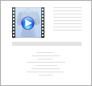
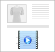

<tr class="checked-tr-background">
	<!--{? uptype != 'image'}-->
	<td class="center videomove hand" ></td>
	<!--{/}-->
	
	<!-- 동영상 정보 시작 -->
	<td class="center" >
		<div class="fl">
			<!--{? uptype == 'image'}-->
			
			<!--{:}-->
			
			<!--{/}--><br/>
			<label class="resp_checkbox mt5">
				<input type="checkbox" name="viewer_use[{uptype}][{videoseq}]" value="Y"  checked="checked" class="viewer_uselay" /> 노출
			</label>
			<!--{? uptype == 'image'}-->
			<select name="viewer_position[{uptype}][{videoseq}]">
				<option value="first">맨앞에</option>
				<option value="last">맨뒤에</option>
			</select>
			<!--{/}-->
			<br/>
			<div style="margin-right:30px;" class="right">
				
				PC/테블릿용:<input type="text" name="pc_width[{uptype}][{videoseq}]" size="3" value="400" class="line onlynumber video_size"   />pixel X <input type="text" name="pc_height[{uptype}][{videoseq}]" size="3" value="300" class="line onlynumber video_size">pixel<br>
				모바일용:<input type="text" name="mobile_width[{uptype}][{videoseq}]" size="3" value="320" class="line onlynumber video_size_mobile"   />pixel X <input type="text" name="mobile_height[{uptype}][{videoseq}]"  size="3" value="240" class="line onlynumber video_size_mobile">pixel<br>
				<br/>
				<span class="desc" >(예: 320X240, 400X300(기본), 640X480, 720X480)</span>
			</div>
		</div>
		<div id="videolay{videoseq}" class="videolay" seq="{videoseq}" tmpcode="{videotmpcode}" style="margin-right:50px;">
			<div>
				<table style="margin: 0px auto;">
					<tbody>
						<tr>
							<td>
								<span class="GDDisplayVideoWrap hand">
									<span class="gddisplaythumbnailvideo"  width="200" height="200" ></span>
									<iframe src="{pageurl}" style="width:200px;height:200px;border:0px;" class="hide"></iframe>
									
								</span>
							</td>
							
							<td>
								<div style="margin-left:10px;">
								HTML (iframe) <button type="button" class="videourlbtn resp_btn v3 size_S" htmlurl="{pageurl}" htmlkey="{file_key_w}" htmltype="iframe">URL</button><br>
								동영상페이지 &nbsp; <button type="button" class="videourlbtn resp_btn v3 size_S" htmlurl="{pageurl}" htmltype="page">URL</button>
								</div>
							</td>
						</tr>
					</tbody>
				</table>
			</div>
		</div>
	</td>
	<!-- 동영상 정보 종료 -->

	<!-- 업로드 일시 시작 -->
	<td class="center" >{r_date}</td>
	<!-- 업로드 일시 종료 -->

	<!-- 연결해제 시작 -->
	<td class="center" >
		<!--{? uptype == 'image'}-->
		<div id="goodsvideodellay" class="videodellay" seq="{videoseq}" tmpcode="{videotmpcode}">
			<!--{:}-->
			<div id="videodellay{videoseq}" class="videodellay" seq="{videoseq}" tmpcode="{videotmpcode}"  >
			<!--{/}-->
				<input type="hidden" name="videofiles[{uptype}][{videoseq}]" value="{videoseq}" >
				<input type="hidden" name="file_key_w[{uptype}][{videoseq}]" value="{file_key_w}" >
				<input type="hidden" name="file_key_i[{uptype}][{videoseq}]" value="{file_key_i}" >
				<input type="checkbox" name="video_del[{uptype}][{videoseq}]" value="1" >
		</div>
	</td>
	<!-- 연결해제 종료 -->
</tr>